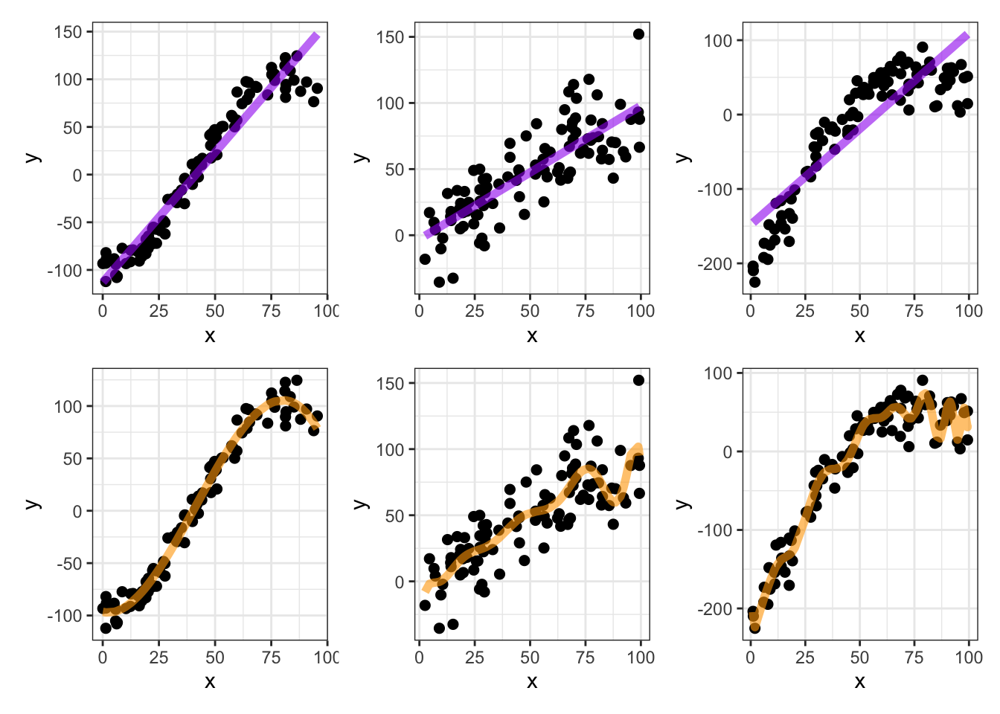
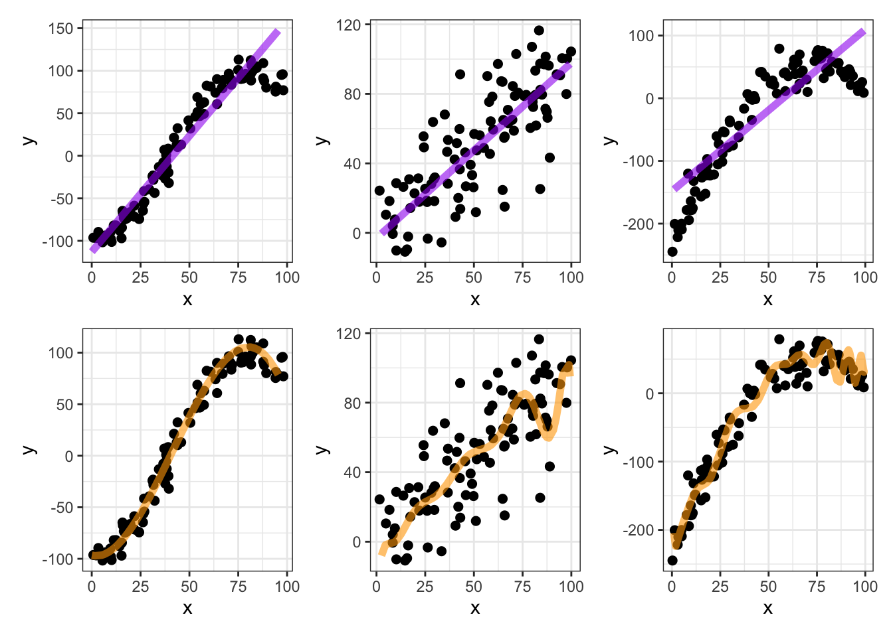

MAT 300: An Overview of Statistical Learning
Objectives: After today, you should be able to answer…
- What is statistical learning in terms of regression?
- Why try to build models (estimate \(f\))?
- Why are prediction and interpretation competing objectives?
- What are noise, reducible error, and irreducible error?
- What are parametric and non-parametric models?
- How do I identify regression versus classification problems?
- What is the difference between supervised and unsupervised learning?
What is Statistical Learning?
Consider some phenomenon which is measured by a variable \(Y\). If we think that \(Y\) is influenced by or related to some set of predictior variables \(X = \left(X_1,~X_2,~...,~X_p\right)\), then we are hypothesizing that \[\displaystyle{Y~=~f\left(X\right) + \varepsilon}\] That is, \(Y\) is explained by the predictors in \(X\) along with some random error, \(\varepsilon\) (noise).
We assume that \(\varepsilon~\sim~N\left(0,\sigma\right)\).
- Note that if \(\mu_{\varepsilon}\neq 0\), we would just adjust the intercept to observe an improvement in prediction accuracy. This means that assuming \(\mu_{\varepsilon} = 0\) is a reasonable thing to do – the mathematics guarantees it.
- Note also that we are assuming that \(\sigma\) is constant. That is, \(\sigma\) does not depend on the values of any predictors or the response.
These assumptions are crucial to constructing appropriate confidence intervals for predictions.
Our Regression Models: The models we fit in regression will be of the form: \[\mathbb{E}\left[Y\right] = \beta_0 + \beta_1 x_1 + \beta_2 x_2 + ...\] this is called a parametric model. because we are estimating the parameters \(\beta_0,~\beta_1,~\beta_2,...\).
- The procedure we use to fit models in this course is called linear regression because the model is linear in the unknown \(\beta\) parameters.
- Regression models involving higher-order (\(x_i^k\)) or mixed (\(x_ix_j\)) terms are still linear regression models.
We may see some examples of nonparametric models later in our course. They typically involve fitting lots of pieces of functions together (step functions, splines, etc.), or are models expressed in terms of a strategy but no equation. Most nonparametric models have little value for interpretation.
Some Simple [Single Predictor] Examples: Consider the following examples which include a numerical response (\(y\)) as a function of a single numerical predictor (\(x\)).
Overfitting (an aside)
More complicated models will always fit the training data more closely, but are likely to overfit. That is, complicated models run a higher risk of trying to fit noise.

Training and Test (Validation) Sets
One way we will try to avoid overfitting is by taking our data and splitting it into a training set used for exploratory analyses and model fitting, and a test set (or validation set) used to see how the fitted model performs on new, unseen data. The following rule of thumb is a good starting point.
- Training sets should contain about 75% of observations
- Test sets should contain the remaining observations
- The more observations you have, the higher the percentage you can place into the training set.
The training and test sets should be the result of a random sampling of your data units. This may be a random sample of the rows in your data frame or, if we have repeated measurements of the same individual over time, may result from a random sample of individuals.
Errors in Prediction
Reducible and Irreducible Errors: The error in approximating the relationship \[Y = f\left(X\right) + \varepsilon\] by \[\hat{Y} = \hat{f}\left(X\right)\] comes in two pieces:
Reducible Error is the error that could be lessened by
- using a more appropriate statistical learning technique
- adjusting the proposed model form
- utilizing additional predictors
Irreducible Error is error that is attributed to random noise in the relationship that cannot be predicted. The prediction error cannot be reduced below the irreducible error.
Regression Vesus Classification
When the response variable is numerical, we use regression models. When the response variable is categorical, we use classification. Note that regression problems can always be turned into classification problems, but classification problems cannot [in general] be converted to regression problems.
Supervised Versus Unsupervised Learning
An application of statistical learning is supervised if the dataset contains a response variable that we are trying to predict or explain. Sometimes there is no response variable, and we would like to do something like identify observations which seem to be similar and to group them together (called clustering). If there is no response variable being predicted, then we have an unsupervised scenario.
- Note: Regression problems must be supervised.
Summary
The following are main points that summarize what we’ll need moving forward in our course on regression analysis.
Our course focuses on building models to predict a numerical response (outcome variable). Regression means having a numerical outcome.
We’ll be modeling relationships of the form \(y = f\left(X\right) + \varepsilon\), where
- \(y\) is a numerical variable,
- \(\varepsilon\) is random, irreducible noise,
- \(X\) is a collection of one or more predictors (features) available to us, and
- \(f\) is the “data generating function” that we are seeking to discover.
The data generating function \(f\) can take many forms.
Our initial focus will be linear regression models
- Simple Linear Regressors: \(\displaystyle{y = \beta_0 + \beta_1 x + \varepsilon}\) have a single predictor variable, and
- Multiple Linear Regressors: \(\displaystyle{y = \beta_0 + \beta_1 x_1 + \beta_2 x_2 + \cdots + \beta_k x_k + \varepsilon}\) multiple linear regressors have multiple predictor variables.
Near the end of our course we’ll explore different classes of models
- perhaps trees and random forests, or
- we’ll choose to look at constructing linear regression models from the Bayesian perspective – your choice!
George Box said that “all models are wrong, but some are useful”. We’ll need to recognize this – the models we build don’t make magic predictions. Understanding the uncertainty in our model parameters as well as the errors our models make will be crucial to wielding our modeling powers responsibly.
We’ll fit our models using training data and assess the performance of those models using hidden test/validation data. We’ll obtain these training and test sets by randomly splitting our available data at the onset of our modeling process.
Mental Paradigm
It may be helpful to think of our modeling process in the context of studying for an exam. Let’s say we have quite an ideal scenario, where you have access to two practice exams.
- On the actual exam, you’ll be the data generating function – providing the answers to the questions.
- You’ll study (train) for the exam by completing the first practice exam (learning from the training data).
- If you focus too closely on only those questions present on that practice exam, you’ll only be prepared to answer those specific questions and won’t do be able to answer new questions (overfitting to the training data).
- You know that the real exam won’t have exactly the same questions as the practice exam, so you’ll try to obtain generalizable insights and knowledge from the practice exam so that you do well on the real exam.
- In order to validate your preparation, you complete the second practice exam (the validation data). Your performance on this second practice exam should give you a good estimate for how you’ll perform on the actual exam (an estimate for future performance).